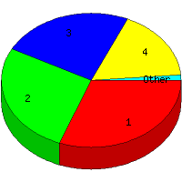

Week of 1/3/2010 to 1/9/2010: Top
5 of
5 File Types (Extensions)
Sorted by Access Count
Individual file types as determined by file extensions. All URLs that
do not contain an extension are counted as directories.

| Rank |
Type |
Accesses |
% |
Bytes |
% |
| 1 |
htm
|
53 |
30.99 |
242,861 |
10.02 |
| 2 |
gif
|
46 |
26.90 |
725,814 |
29.96 |
| 3 |
jpg
|
41 |
23.98 |
1,382,576 |
57.07 |
| 4 |
Directory (folder)
|
29 |
16.96 |
70,875 |
2.93 |
| 5 |
css
|
2 |
1.17 |
520 |
0.02 |